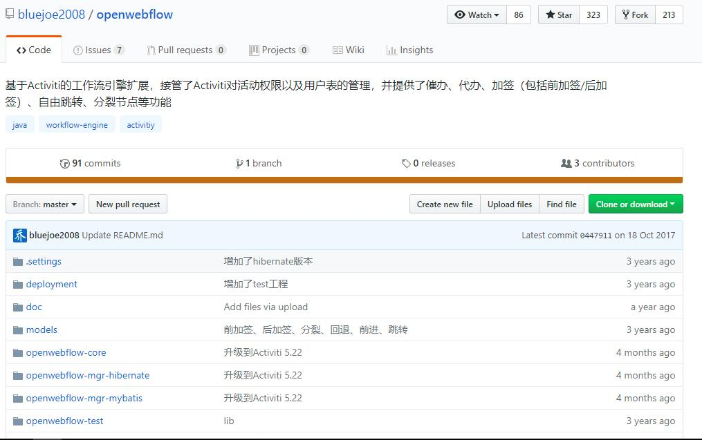

工作流引擎技术选型
2018-01-11Snaker
Snaker是一个基于Java的开源工作流引擎，适用于企业应用中常见的业务流程。本着轻量、简单、灵巧理念设计，定位于简单集成，多环境支持
轻量:
核心代码行数大约7000行，强大的扩展性，支持Spring、Jfinal、Nutz平台级框架；支持Jdbc、SpringJdbc、Hibernate3or4、Mybatis等orm框架
简单:
表设计简单，流程组件简单[start/end/task/custom/subprocess/decision/fork/join]
灵巧:
暴露大量可扩展接口，支持流程设计器、流程引擎的组件模型自定义[节点自定义、属性自定义、表单自定义]
演示应用: http://git.oschina.net/yuqs/snaker-web
GITHUB:https://github.com/snakerflow/snakerflow

openwebflow

OpenWebFlow是基于Activiti（官方网站http://activiti.org/）扩展的工作流引擎（国人开发），它扩展的功能包括：
- 完全接管了Activiti对活动（activity）权限的管理。Activiti允许在设计model的时候指定每个活动的执行权限，但是，业务系统可能需要根据实际情况动态设置这些任务的执行权限（如：动态的Group）。OpenWebFlow完全实现了与流程定义时期的解耦，即用户对活动的访问控制信息单独管理（而不是在流程定义中预先写死），这样有利于动态调整权限，详见自定义活动权限管理；
- 完全接管了Activiti对用户表（IDENTITY_XXX表）的管理。在标准的工作流定义中，每个节点可以指定其候选人和候选用户组，但是比较惨的是，Activiti绑架了用户信息表的设计！这个是真正致命的，因为几乎每个业务系统都会属于自己的用户信息结构（包括User/Group/Membership），但不一定它存储在Activiti喜欢的那个库中，表的结构也不一定一样，有的时候，某些信息（如：动态的Group）压根儿就不采用表来存储。OpenWebFlow剥离了用户信息表的统一管理，客户程序可以忘掉Activiti的用户表、群组表、成员关系表，详见自定义用户成员关系管理；
- 允许运行时定义activity！彻底满足“中国特色”，并提供了安全的（同时也是优雅的）催办、代办、加签（包括前加签/后加签）、自由跳转（包括前进/后）、分裂节点等功能；
支持与致谢
详细说明：https://my.oschina.net/bluejoe/blog/1552284#comment-list
GITHUB地址：https://github.com/bluejoe2008/openwebflow

JBPM
jBpm是一个灵活可扩展的工作流管理系统。作为 jBpm运行时server输入的业务流程使用简单强大的语言表达并打包在流程档案中。jBpm将工作流应用开发的便利性和杰出的企业应用集成（EAI）能力结合了起来。jBpm包括一个Web应用程序和一个日程安排程序。jBpm是一组J2SE组件，可以作为J2EE应用集群部署。

JBoss容器下的产品,可能存在兼容性问题，放弃
Activiti的作者即是JBPM原作者
Activiti
Activiti是一个业务流程管理(BPM)和工作流系统，适用于开发人员和系统管理员。其核心是超快速，稳定的BPMN2流程引擎。它易于与 Spring集成使用。
用户指南：http://www.activiti.org/userguide/index.html
GITHUB地址：https://github.com/Activiti/Activiti
Github上更新频率最快：

flowable
flowable工作流是Activiti团队一个分支，从JBPM到Activiti到flowable
flowable是一个用Java实现的轻量级业务工作流引擎，
兼容activiti
支持Spring 、Spring Boot
可以部署到任意Java环境，如java SE、servlet容器、如Tomcat或jetty、Java EE 服务器 如JBoss容器等
GITHUB地址：https://github.com/flowable/flowable-engine
GITHUB更新频率

支持的数据：
| Flowable 数据库类型 | 示例jdbc url | 说明 |
|---|---|---|
| h2 | jdbc:h2:tcp://localhost/flowable | 默认配置数据库 |
| mysql | jdbc:mysql://localhost:3306/flowable?autoReconnect=true | 测试使用mysql-connector-java数据库驱动 |
| oracle | jdbc:oracle:thin:@localhost:1521:xe | |
| postgres | jdbc:postgresql://localhost:5432/flowable | |
| db2 | jdbc:db2://localhost:50000/flowable | |
| mssql | jdbc:sqlserver://localhost:1433;databaseName=flowable (jdbc.driver=com.microsoft.sqlserver.jdbc.SQLServerDriver) OR jdbc:jtds:sqlserver://localhost:1433/flowable (jdbc.driver=net.sourceforge.jtds.jdbc.Driver) | 测试使用Microsoft JDBC Driver 4.0 (sqljdbc4.jar) 驱动 |
flowable的数据库名称都以act_开始。第二部分是对表格用例的两个字符的识别。这个用例也大致匹配服务API。
actre *：代表基础仓库。带有此前缀的表包含静态信息，如流程定义和流程资源（图像、规则等）。
actru *：运行库。这些是运行时表，其中包含进程实例、用户任务、变量、作业等的运行时数据。流动只存储过程实例的执行过程中的运行时数据和删除记录时，一个流程实例结束。这样可以使运行时表小而快速。
acthi *：历史库，代表历史。这些表包含历史数据，如过去的流程实例、变量、任务等。
actge *：常规库，这是用于各种使用案例。